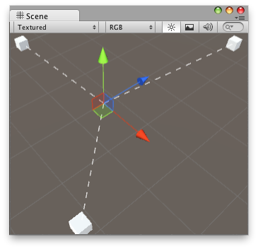

Handles.DrawDottedLine
Parameters
| p1 | The start point. | |
| p2 | The end point. | |
| screenSpaceSize | The size in pixels for the lengths of the line segments and the gaps between them. |
Description 描述
Draw a dotted line from p1 to p2.

Draw Line in the Scene View.
// Draw lines to the connected game objects that a script has. // If the target object doesn't have any game objects attached // then it draws a line from the object to (0, 0, 0).
using UnityEditor; using UnityEngine;
[CustomEditor(typeof(ConnectedObjectsExample))] class ConnectLineHandleExample : Editor { float dashSize = 4.0f; void OnSceneGUI() { ConnectedObjectsExample connectedObjects = target as ConnectedObjectsExample; if (connectedObjects.objs == null) return;
Vector3 center = connectedObjects.transform.position; for (int i = 0; i < connectedObjects.objs.Length; i++) { GameObject connectedObject = connectedObjects.objs[i]; if (connectedObject) { Handles.DrawDottedLine(center, connectedObject.transform.position, dashSize); } else { Handles.DrawDottedLine(center, Vector3.zero, dashSize); } } } }
And the script attached to this Handle:
using UnityEngine; using System.Collections;
public class ConnectedObjectsExample : MonoBehaviour { public GameObject[] objs = null; }